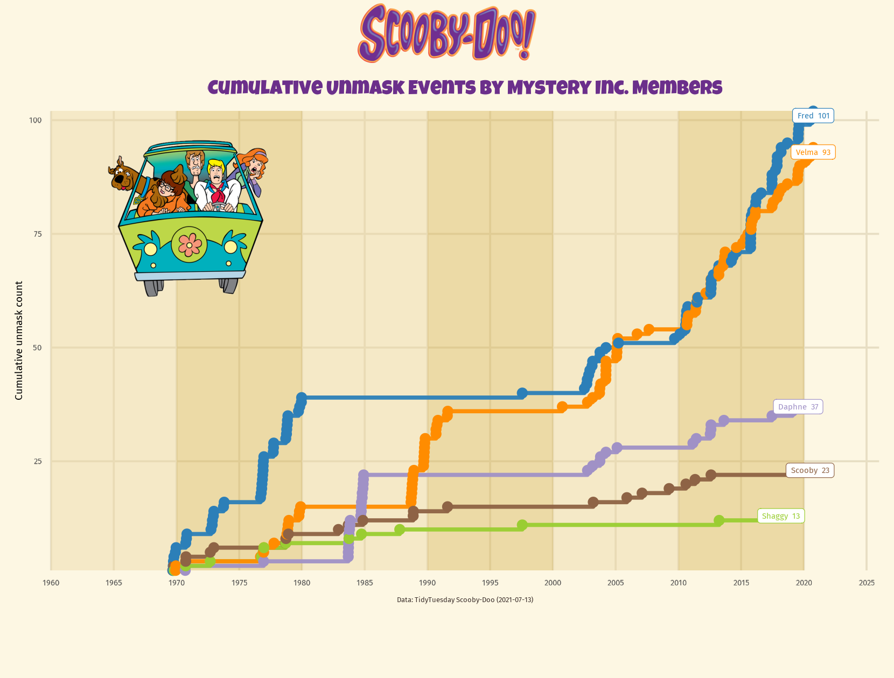
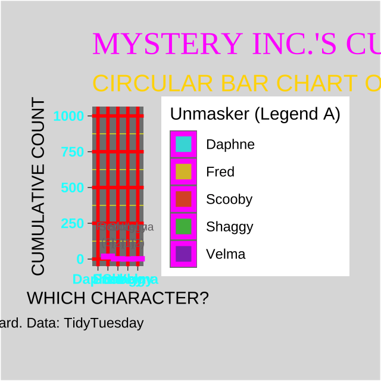
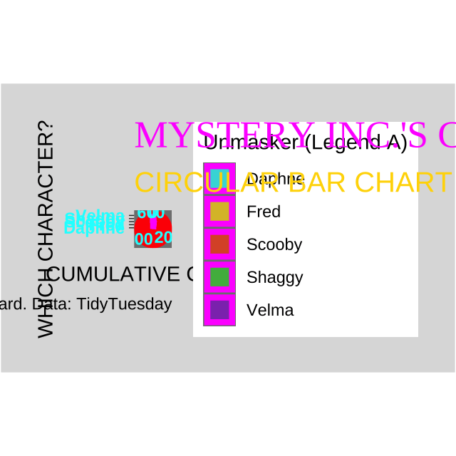

Code
library(tidytuesdayR)
library(tidyverse)
library(lubridate)
library(showtext)
library(ggrepel)
library(cowplot)
library(here)
library(magick)
library(gganimate)
library(gifski)This project uses the Scooby-Doo dataset from the TidyTuesday collection (Week 29, 2021). The dataset, originally compiled by data journalist Kaggle user Kaustubh Naik, contains over 600 episodes and movies from the Scooby-Doo franchise, spanning 1969 to 2021. Each record describes details such as:
Episode information – title, air date, series name, and run time
Villain and culprit details – monster name, type, and motive
Character actions – indicators for who caught, captured, unmasked, or ate snacks during each mystery
For this assignment, I focused on unmask events (the moment the gang reveals the culprit’s identity) to visualize how the responsibilities for solving mysteries have shifted among the main five characters — Fred, Daphne, Velma, Shaggy, and Scooby-Doo — over time.
The goal of this assignment is to:
library(tidytuesdayR)
library(tidyverse)
library(lubridate)
library(showtext)
library(ggrepel)
library(cowplot)
library(here)
library(magick)
library(gganimate)
library(gifski)# --------- Load in dfs -----------------------
# Scooby Doo Data set from tidytuesday
Scooby_Doo <- tt_load('2021-07-13')
# Extract data sheet from tibble
Scooby_Doo <- Scooby_Doo$scoobydoo
# ----------- Clean and subset data ---------------------
unmask_tl <- Scooby_Doo %>% # start from the full Scooby-Doo dataset
select(index, title, date_aired,
matches("^unmask_(fred|daphnie|velma|shaggy|scooby)$")) %>% # keep only episode info and character unmask columns (not unmask_other)
pivot_longer(
cols = matches("^unmask_(fred|daphnie|velma|shaggy|scooby)$"), # reshape to long format
names_to = "who_raw", # store the column name (e.g., "unmask_fred") in a new variable
values_to = "flag" # store the cell value
) %>%
mutate(flag = tolower(trimws(as.character(flag))) %in% c("true","1","t","yes")) %>% # clean up and normalize TRUE values (account for case, whitespace, and numeric entries)
filter(flag) %>% # keep only rows where an unmask actually occurred
mutate(
who = recode(who_raw, # rename columns to cleaner character names
"unmask_fred" = "Fred",
"unmask_daphnie" = "Daphne",
"unmask_velma" = "Velma",
"unmask_shaggy" = "Shaggy",
"unmask_scooby" = "Scooby"
),
air_dt = coalesce(date_aired, as.Date("1960-01-01") + days(index)) # if air date is missing, use the episode index to create a fallback chronological order
) %>%
arrange(air_dt, index) %>% # ensure data is in chronological order
group_by(who) %>% # group by character to calculate each one’s cumulative count
mutate(unmasks_cum = row_number()) %>% # running total of unmask events for each character
ungroup() # remove grouping for further analysis or plotting# ---------- Add font ---------------------
# Add fonts
font_add_google("Luckiest Guy", "luckiest")
font_add_google("Fira Sans", "firasans")
showtext_auto()
# Scooby palette
pal_chars <- c(
"Daphne"="#A091C6",
"Fred"="#2C7FB8",
"Scooby"="#8E6345",
"Shaggy"="#9ACD32",
"Velma"="#FF8C00"
)# --------------- Data Range ------------------------
# Make sure date is within a certain range
start <- as.Date("1969-01-01") # left bound used for bands/xlim floor (historical start)
cutoff <- as.Date("2026-01-01") # right bound to crop the timeline (avoid empty future space)
# Make sure x is date
unmask_tl <- unmask_tl %>% mutate(air_dt = as.Date(air_dt)) # ensure air_dt is a Date for scale_x_date/coord_cartesian
# crop the timeline data
df_crop <- unmask_tl %>% filter(air_dt <= cutoff) # keep only events up to the cutoff date
# ---------- Decade bands -------------------------
start <- floor_date(min(df_crop$air_dt, na.rm = TRUE), unit = "10 years") # align band start to a decade boundary
end <- cutoff # band end at the cutoff
edges <- seq(start, end, by = "10 years") # decade breakpoints
bands <- tibble( # dataframe of rectangles for background bands
xmin = edges[-length(edges)], # left edge of each band
xmax = edges[-1], # right edge of each band
fill = rep(c("#EBD8A3", "#D6B55B"), length.out = length(edges)-1) # alternating column colors
)
# ------------- End labels for each character ------------
ends <- df_crop %>%
group_by(who) %>% # per character
slice_max(air_dt, n = 1, with_ties = FALSE) %>% # last visible point in the cropped range
ungroup()
# Base background
base_bg <- "#FDF7E3"
# -------------------- Plot ---------------------------
p_timeline <- ggplot(df_crop, aes(air_dt, unmasks_cum, color = who)) + # cumulative timeline by character
geom_rect( # draw decade bands behind data
data = bands,
aes(xmin = xmin, xmax = xmax, ymin = -Inf, ymax = Inf),
inherit.aes = FALSE, fill = bands$fill, color = NA, alpha = 0.45
) +
geom_step(linewidth = 1.3, alpha = 0.95) + # emphasizes cumulative jumps
geom_point(size = 2.6) + # points at event changes
geom_label( # direct end labels
data = ends,
aes(
x = air_dt,
y = unmasks_cum,
label = paste0(who, " ", unmasks_cum),
color = who
),
family = "firasans",
size = 4,
label.size = 0.2,
label.padding = unit(3, "pt"),
label.r = unit(2, "pt"),
show.legend = FALSE
) +
scale_color_manual(values = pal_chars, guide = "none") + # Scooby-themed colors, hide legend
scale_x_date(date_breaks = "5 years", date_labels = "%Y") + # evenly spaced year ticks
coord_cartesian(xlim = c(start, cutoff), expand = FALSE, clip = "off") + # crop to range
scale_y_continuous(expand = expansion(mult = c(0.02, 0.30))) + # extra headroom so labels aren’t clipped
labs(
title = "Cumulative Unmask Events by Mystery Inc. Members", # Scooby-style title (logo acts as masthead)
subtitle = NULL,
x = NULL, y = "Cumulative unmask count",
caption = "Data: TidyTuesday Scooby-Doo (2021-07-13)"
) +
theme_minimal(base_family = "firasans", base_size = 14) + # clean base theme
theme(
plot.background = element_rect(fill = "#FDF7E3", color = NA), # match panel to Scooby beige
panel.background = element_rect(fill = "#FDF7E3", color = NA),
panel.grid.minor = element_blank(), # reduce grid clutter
panel.grid.major = element_line(color = "#e7dec3"),
plot.title = element_text( # Scooby-vibe title styling
family = "luckiest", # set earlier via font_add_google("Luckiest Guy","luckiest")
size = 28,
face = "plain",
color = "#6B2F8B",
hjust = 0.5,
margin = margin(b = 10)
),
plot.caption = element_text(size = 10, hjust = 0.5, color = "#3b2e2a"),
axis.ticks = element_blank(),
plot.margin = margin(t = 14, r = 10, b = 10, l = 10)
)
# -------------------- Save plot ---------------------------------------
ggsave(
filename = here::here("Good_Plot_Bad_Plot","Output","scooby_timeline_base.png"),
plot = p_timeline,
width = 8.3, height = 5.2, units = "in", dpi = 200
) # ------------------ Add images ------------------
# Read in the base plot and logo/images
plot_png <- here("Good_Plot_Bad_Plot", "Output", "scooby_timeline_base.png")
logo_png <- here("Good_Plot_Bad_Plot", "Images", "Scooby_doo_logo.png")
van_png <- here("Good_Plot_Bad_Plot", "Images", "Mystery_Gang.png")
# --------------- Read base plot ----------------
timeline <- image_read(plot_png) # read base plot as magick image
# -------- Add top header so logo never covers plot ----
timeline <- image_read(plot_png)
header_px <- 110
base_bg <- "#FDF7E3"
timeline_p <- image_border(timeline, color = base_bg, geometry = paste0("0x", header_px)) # add header strip
# ---- Read, trim, and scale overlay images ----
Width <- image_info(timeline_p)$width # canvas width for proportional scaling
logo <- image_read(logo_png) %>%
image_trim(fuzz = 10) %>% # read logo and trim extra transparent edges
image_scale(paste0(round(Width * 0.20))) # scale logo to ~20% of canvas width
van <- image_read(van_png) %>%
image_trim(fuzz = 10) %>% # read logo and trim extra transparent edges
image_scale(paste0(round(Width * 0.18))) # scale logo to ~18% of canvas width
# --------------- compose: ------------------
# logo: top-center (slight nudge down)
with_logo <- image_composite(
timeline_p, logo, # place logo on padded canvas
gravity = "north", offset = "+0+6" # top-center, slight downward nudge
)
# van: inside the panel, away from y-axis
van_x <- 200 # push right so it doesn't cover y-axis labels
van_y <- header_px + 150 # push down into plotting area
final_img <- image_composite(
with_logo, van,
gravity = "northwest",
offset = paste0("+", van_x, "+", van_y)
)
# ---- save ----
image_write(final_img, here("Good_Plot_Bad_Plot", "Output", "Scooby_Timeline_Final.png"))
# ------ Show Plot -------------
final_img
Clear question, clear answer. The title and cumulative step lines make the story obvious: who unmasks villains and how that leadership changes over time.
Right chart for the data. A cumulative timeline emphasizes contributions accruing across episodes and is much clearer than a bar chart or a pie chart.
Direct labeling. End labels on each line remove back-and-forth scanning and keep focus on the trends.
Purposeful color encoding. A consistent, Scooby-themed palette maps character and one color per character makes things clear and reproducible.
Context without clutter. Soft decade bands add temporal structure while staying low-contrast so the data remains dominant.
On-theme but restrained. A playful title font and small character art/ create Scooby-Doo vibes without overwhelming the data.
Uses the same data as good plot so there is no need for excess code.
# ---------------------- Plot ------------------------
p_bad <-
ggplot(unmask_tl %>%
arrange(air_dt),
aes(x = who,
y = unmasks_cum,
fill = who, group = who)) + # sort by date so the reveal animates in order, map character to x/fill and use group for animation
theme_dark(base_family = "sans") + # noisy dark theme for maximum distraction
geom_col(width = 0.9,
color = "#FF00FF",
linewidth = 1.5,
alpha = 0.7,
show.legend = TRUE) + # thick magenta outlines and semi-opaque bars to create clutter
geom_text(aes(label = paste0(who, "\n(", unmasks_cum, ")")),
vjust = -0.5,
color = "#787276",
size = 2.5,
show.legend = FALSE) + # overlapping labels that fight readability
coord_polar(theta = "y") + # misuse polar coords: map angle to cumulative counts (viewers expect length, not angle)
scale_fill_manual(values = c("Daphne"="#00FFFF",
"Fred"="#FFD700",
"Scooby"="#FF4500",
"Shaggy"="#32CD32",
"Velma"="#9400D3"),
name = "Unmasker (Legend A)") + # garish rainbow-like palette with a boastful legend name
labs(title = "MYSTERY INC.'S CUMULATIVE UNMASKING EFFORT (1969 - {frame_time})",
subtitle = "CIRCULAR BAR CHART OF DECADES OF DATA",
x = "WHICH CHARACTER?",
y = "CUMULATIVE COUNT",
caption = "Visualization is hard. Data: TidyTuesday") + # loud, opinionated titling that doesn’t aid interpretation
theme(plot.title = element_text(family = "serif",
size = 20,
color = "#FF00FF",
face = "bold"), # oversized neon title for visual noise
plot.subtitle = element_text(size = 15,
color = "#FFD700",
face = "italic"), # giant subtitle further crowding the canvas
axis.text = element_text(color = "#00FFFF",
face = "bold"), # bright axis text that clashes with the bars
panel.grid.major = element_line(color = "red",
linewidth = 1.0), # heavy major gridlines add interference
panel.grid.minor = element_line(color = "yellow",
linewidth = 0.2), # minor gridlines too, because why not
plot.background = element_rect(fill = "#ddd")) + # mismatched grey background that doesn’t fit the theme
gganimate::transition_reveal(air_dt) + # ADDED ANIMATION LAYER
gganimate::ease_aes("linear") # ADDED ANIMATION EASINGI originally used coord_polar() to force a “circular” bar chart, but gganimate + auto-scaling in the HTML render kept collapsing/zooming the frame (and sometimes hit max device size). To guarantee the animation exports and shows up in Quarto, we switch to cartesian with big margins and clip=‘off’. This is deliberate: it renders reliably AND illustrates how bad formatting choices + animation can wreck a plot in practice.
# Build the animated plot
p_bad_final <- p_bad + # start with bad plot
coord_cartesian(clip = "off") + # let the labels/legends spill outside the panel
theme(plot.margin = margin(20, 20, 30, 20)) # add breathing room
# Render straight to file and make an explicit path so quarto can find it
out_gif <- here::here("Good_Plot_Bad_Plot","Output","Bad_StaticPolar.gif")
# Render the animation frames
gganimate::animate(
p_bad_final,
nframes = 45, # short, choppy animation (exaggerates motion without insight)
fps = 8, # low frame rate → stuttery look
width = 640,
height = 640,
units = "px", # use pixels to avoid runaway device scaling
bg = "white",
renderer = gganimate::gifski_renderer(file = out_gif), # write directly to the GIF file via gifski
progress = FALSE
)
# Where to save
out_dir <- here::here("Good_Plot_Bad_Plot", "Output")
dir.create(out_dir, recursive = TRUE, showWarnings = FALSE)
out_gif <- file.path(out_dir, "Bad_Polar.gif")
# 1) Force cartesian (so it actually renders) + keep the chaotic margins
p_bad_cart <- p_bad + # assumes you already created p_bad as in your code
coord_cartesian(clip = "off") +
theme(plot.margin = margin(20, 20, 30, 20))
# 2) Render straight to file (fixed pixel device; no HTML involved)
gganimate::animate(
p_bad_cart,
nframes = 45,
fps = 8,
width = 640,
height = 640,
units = "px",
bg = "white",
renderer = gganimate::gifski_renderer(file = out_gif),
progress = FALSE
)
Chart type drifted. Started as a polar chart but had to switch to Cartesian just to make the GIF embed/render. That change breaks the intended mapping and produces a layout that’s neither a proper bar chart nor a proper radial chart. Which directly goes against reproducibility.
Encoding mismatch. Bars are drawn for cumulative totals over time but are repeated for every episode; the geometry suggests “snapshot totals,” not an accumulating process.
Low readability text. Axis labels and in-bar text are tiny and low-contrast (cyan/gray on gray) and many labels overprint each other.
Axis dishonesty. The left axis reads “CUMULATIVE COUNT,” but the bars reflect per-row cumulative values, not a single cumulative value per character, which is very sneaky.
No ordering or comparison cues. Characters appear in a nominal order and there’s no sorting by size and no direct labeling at endpoints, so comparisons are hard.
Color misuse: Rainbow palette + dark theme = poor accessibility and dependence on the legend to decode identity.
Over-annotation. Titles, subtitle, huge legend, thick grids, captions all crowd the canvas while conveying little.
Animation adds confusion. The reveal over time suggests precision but actually obscures magnitudes and makes it harder to compare characters at any single moment.